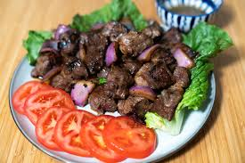

Shakeing Beefs

Home
Description
Shaking Beef is a popular Vietnamese-French inspired dish featuring tender cubes of sear-roasted beef sautéed with garlic, soy sauce, and butter. The name "Shaking Beef" comes from the constant "shaking" or tossing of the wok to sear the meat evenly.
It is traditionally served on a bed of fresh watercress and sliced tomatoes, with a side of lime-salt-pepper dipping sauce for a perfect balance of savory and tangy flavors.
Ingredients
- Protein: 500g beef tenderloin or ribeye, cut into 1-inch cubes.
- Marinade: Soy sauce, oyster sauce, minced garlic, and a touch of sugar.
- Vegetables: Red onions, bell peppers, watercress, and tomatoes.
- Cooking Fat: Vegetable oil and a knob of unsalted butter for richness.
- Dipping Sauce: Fresh lime juice, sea salt, and black pepper.
Steps
- Marinate Beef: Toss the beef cubes with the marinade ingredients and let sit for at least 20 minutes.
- Prepare Veggies: Wash the watercress and arrange it on a serving plate with sliced tomatoes.
- High-Heat Sear: Heat oil in a wok until smoking. Add beef in a single layer and let it sear for 1 minute without moving.
- The "Shake": Add onions and peppers, then shake the wok constantly for 2-3 minutes until the beef is medium-rare.
- Finish & Serve: Stir in a bit of butter for a glossy finish, then pour the beef over the bed of watercress. Enjoy hot!